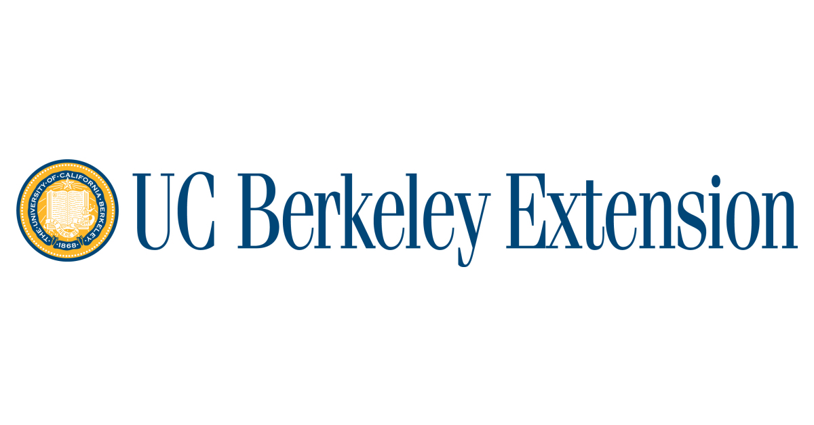

Education

University of California, Berkeley Extension 📍 Remote
2024
Full Stack Web Developer
12 week full-time bootcamp to learn the fundamental concepts of web development.
I am also learning to work with servers, databases, and other back end technologies, such as
MySQL database, Node.js and more. By the end of this bootcamp, I will be able to show my skills
using NoSQL databases, converting traditional applications into progressive web applications and learn React
George Washington University 📍 Washington, D.C.
2018 - 2022
BA in Sociology
Wilmington Friends School 📍 Wilmington, DE
2014 - 2018
High School Diploma
I recieved IB (international baccalaureate) certificates in biology, art, and english. I was on the varisty volleyball team and track team and part of the LINK crew, which welcomed new students to the school